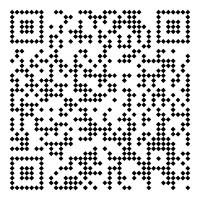

Documentation
1. Configuration Overview
All options are read from [preprocessor.qr] and its sub-tables.
| Key | Type | Description | Default |
|---|---|---|---|
enable | bool | Enable or disable the preprocessor | true |
localhost-qr | bool | For UX proposes you generate a placeholder qr code from localhost | false |
marker | string | the marker where <img> is injectd | {{QR_CODE}} |
url | string | The URL or text to encode | GITHUB_REPOSITORY |
qr-path | string | Relative or absolute path to the output PNG | "qr/mdbook-qr-code.png" |
margin | integer | Quiet zone around the QR code (in modules) | 2 |
fit | integer | Size/dimension of the QR code image | width = 200 |
background | string | Hex color (#RRGGBBAA,#RRGGBB,[RRR,GGG,BBB,AAA],[RRR,GGG,BBB] supported) | "#FFFFFFFF" |
module | string | Hex color (#RRGGBBAA,#RRGGBB,[RRR,GGG,BBB,AAA],[RRR,GGG,BBB] supported) | "#000000FF" |
shape | table | Boolean flags defining the QR module shape | square = true |
1.1 Localhost QR
new for v0.1.3
When building locally with mdbook serve, you can enable a development-only QR mode that points to your local preview server instead of the deployed GitHub Pages site.
[preprocessor.qr]
enable = true
localhost-qr = true
When localhost-qr = true:
-
All generated QR codes encode
http://127.0.0.1:3000/(the default mdbook serve address). -
The image is written to a fixed, predictable path,
{book.src}/mdbook-qr/qr_localhost.png -
The preprocessor automatically creates or updates your repository’s
.gitignorewith{book.src}/mdbook-qr/ensuring the development image is never committed to Git. -
CI/CD or production builds use normal behaviour, see URL Resolution section for more details.
Tip
This mode provides a seamless local preview experience while keeping your repository clean. For example,
mdbook serveathttp://127.0.0.1:3000/will display valid QR codes pointing to your local preview pages.
1.2 Marker
The marker where <img> is injectd
-
Default for non-custom markers
{{QR_CODE}}
Important
markeris defaulted to{{QR_CODE}}and cannot explicitly be set to anything else. If you want to use your marker then create acustom.*sub-table, see Custom Configurations section.
1.3 URL Resolution
If url is omitted, and you are in CI environment mdbook-qr resolves it automatically from GitHub Actions environment variable GITHUB_REPOSITORY, producing:
https://{owner}.github.io/{repo}
If you are local enable the localhost-qr option, see Localhost QR section for me information.
[preprocessor.qr]
url = "https://compeng0001.github.io/mdbook-qr"
Note
You can always set an env variable locally to test CI
export GITHUB_REPOSITORY="owner/repo"To
unset
unset GITHUB_REPOSITORY
1.4 QR Path
qr-path can be relative or absolute path to the output PNG.
- Default path if none is provided for non-custom marker is
src_dir/src/qr/qr_code.png, wheresrc_dirisbook.srcdeclared in book.toml
[preprocessor.qr]
qr-path = "/path/to/qr_code.png
1.5 Margin
Quiet zone around the QR code (in modules)
[preprocessor.qr]
margin = 2
1.6 Fit (Image Size)
fit can be used to specify the size/dimensions of the qr code. The default is fit.width = 200 which is mirrored to fit.height = 200
[preprocessor.qr.fit]
width = 300
height = 300
If only one dimension is provided, the same value is used for the other.
1.7 Background
The colour of the background for the qr code:
- Hex color:
#RRGGBB#RRGGBBAA
- RGB:
[RRR,GGG,BBB][RRR,GGG,BBB,AAA]
[preprocessor.qr]
background = "#FFFFFF"
1.8 Module
The colour of the module for the qr code:
- Hex color:
#RRGGBB#RRGGBBAA
- RGB:
[RRR,GGG,BBB][RRR,GGG,BBB,AAA]
[preprocessor.qr]
module = "#000000"
1.9 Shape
Boolean flags defining the QR module shape
[preprocessor.qr.shape]
square = true
circle = true
rounded_square = true
vertical = true
horizontal = true
diamond = true
Note
Shape Precedence (first
truewins):
circle -> rounded_square -> vertical -> horizontal -> diamond -> square`
If none are supplied, square is used.
fast_qr::convert::Shape::Command(for custom procedural shapes) is not yet implemented.
2. Custom Configurations
Custom QR definitions allow you to create named styles that inherit values from the main [preprocessor.qr] table.
These are declared under [preprocessor.qr.custom.*] as a sub-table.
Each named sub-table inherits all parent values unless explicitly overridden, accept marker and qr-path see following sub-sections for guidance.
[preprocessor.qr]
url = "https://default.example.com"
margin = 2
background = "#FFFFFFFF"
module = "#000000FF"
[preprocessor.qr.custom.footer]
marker = "{{QR_FOOTER}}"
url = "https://github.com/CompEng0001"
qr-path = "src/footer-qr.png"
fit.width = 128
fit.height = 128
shape.diamond = true
[preprocessor.qr.custom.slide]
marker = "{{QR_SLIDE}}"
url = "https://slides.example.com"
module = "#22AAFFFF"
background = "#00000000"
shape.circle = true
2.1 Custom Marker
Each marker corresponds to its respective [preprocessor.qr.custom.*] sub-table.
[preprocessor.qr.custom.slide]
marker = "{{QR_SLIDE}}"
[preprocessor.qr.custom.footer]
marker = "{{QR_FOOTER}}"
Based on the configuration in above you would use these markers in your Markdown files:
{{QR_FOOTER}}
{{QR_SLIDE}}
Each marker corresponds to its respective [preprocessor.qr.custom.*] block.
Important
- The
custom.*sub-table only generates a QR code when themarkeris defined and placed in a Markdown file(s)
2.2 Custom QR Path
The custom.*.qr-path can be defined by the user and the *.png will be created there.
[preprocessor.qr.custom.example]
marker = "{{QR_EXAMPLE}}"
Important
If custom marker is defined and no path given then default path is used and file name is derived from marker:
- Using example from above -
src_dir/qr/qr_example.png,
- where
src_dirisbook.srcdeclared in book.toml
3. Example Outputs
[preprocessor.qr]
url = "https://default.example.com"
margin = 2
background = "#FFFFFFFF"
module = "#000000FF"
[preprocessor.qr.custom.footer]
marker = "{{QR_FOOTER}}"
url = "https://github.com/CompEng0001"
qr-path = "src/footer-qr.png"
fit.width = 128
fit.height = 128
shape.diamond = true
[preprocessor.qr.custom.slide]
marker = "{{QR_SLIDE}}"
url = "https://slides.example.com"
module = "#22AAFFFF"
background = "#00000000"
shape.circle = true
